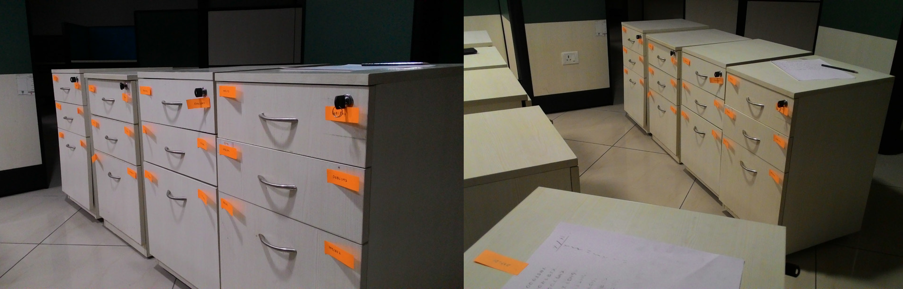
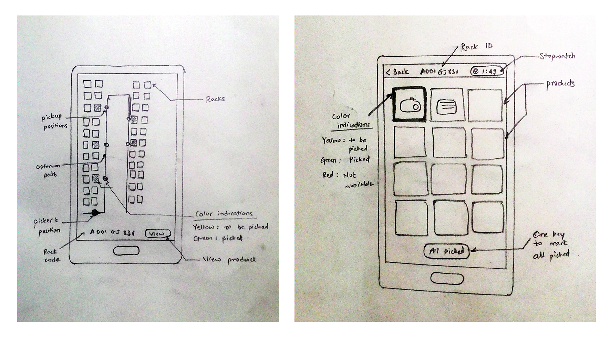
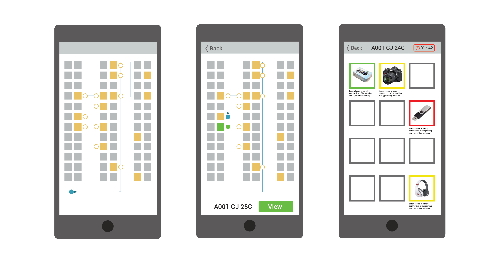
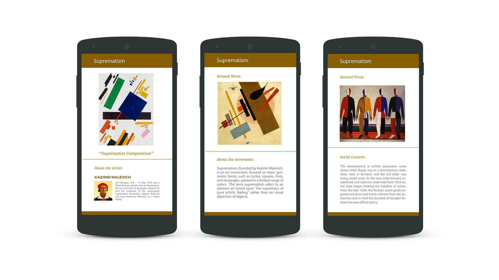
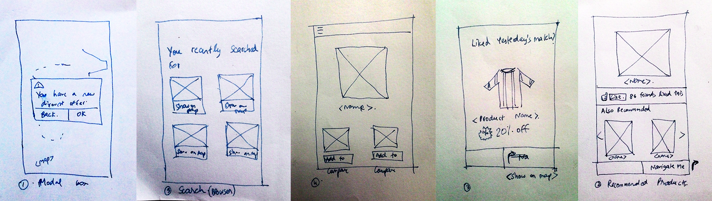
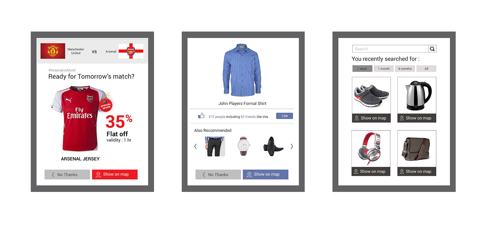
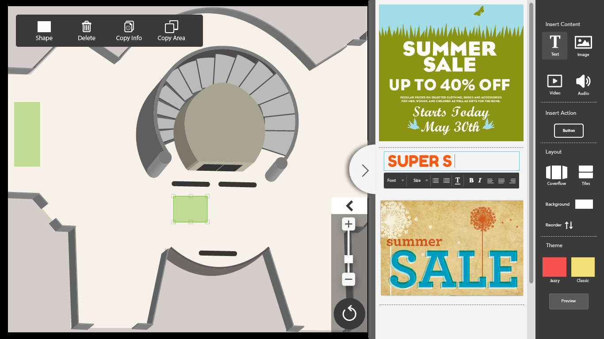
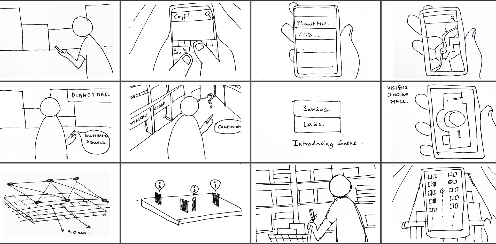

User Experience Design for Indoor positioning and navigation
Interaction Design Internship at Sensus Labs, Bangalore
About the project
This work was a part of our internship program at Sensus Labs, Bangalore. Sensus Labs works on indoor positioning and navigation systems. Their indoor positioning technology was able to achieve accuracy of upto 30 cms. This technology can be used in variety of indoor spaces like Warehouses, Museums, Shopping Malls, Hospitals, Airports, Parking Spaces, etc. The user experience is very contextual for each application and it depends on spaces as well as variety of sociological and psychological parameters. The scenarios that we worked on during our course were warehouses, museums and shopping malls. The study involved User research, Experience prototyping, Ideation and generating ideas, Creating quick wireframes and mockups, developing the mockups and testing. We also worked on the website and a concept video of the company.
Warehouses

In large warehouses, where the carpet area is in thousands of square meters, navigation is very difficult. The warehouse, for which we were designing, had an area of 2 million square feet. Around 1700 workers worked at the warehouse in 2 shifts for the picking activity. Since the picking activity was tiresome and hardly interesting, the workers were less motivated to work. They had to navigate to the correct bin in a shelf by decoding the code of the product printed on the pick up list. The ideal time allotted by warehouse management to complete one pick up cycle and the time taken by the workers to complete it differed a lot. There were a lot of parameters slowing down this pick up activity. They workers took a considerable time to decode the item code, find the correct bin and navigate to that bin, marking picked up items and informing the warehouse management system about items that are missing or out of stock.
We designed a mobile application that gives an optimal route to pick up items and lets the picker update the status of the item to be picked up from the device. Gamification of the application was also suggested to enhance the user experience.
Experience prototyping
 We carried out an experience prototyping of the picking activity in warehouse. We enacted the process and tried to empathize with the pickers. It helped us identify the problems they must be facing while picking through this activity. We did multiple iterations, initially taking into consideration that the picker is not experienced and still does not have a complete conceptual model of the rack sequences and numberings. The time was noted for each iteration and it was seen that once the picker is fluent with arrangement of shelves and rack sequences, the amount of time taken to pick up from a list having 12 items dropped by almost 50%. The entire process gave us a lot of insights, which we used to design the experience and the interface. We could not perform user studies in the warehouse because of security reasons.
Early sketches
Wireframes
Dashboard

Museums

Designing user experience for museums was quite different from the rest since it depended entirely on the user’s personal choice. The user experience will vary vastly with respect to the type of museum and its location. Expectations of Indian users vary a lot from US or European users. By type, we mean traditional art, modern art, archeology, science, etc. The users might want to have a seamless experience with the tangible displays when it comes to historic artefacts or monuments. Taking out the phone and looking at the digital information might cause a hindrance to that. So, displaying text on screen might not be a good solution. Hence, we decided to visit different types of museums, observe visitors and conduct an user studies.
Wireframes
Retail

In a retail scenario, embedding advertisements strategically can benefit both B2B and B2C users. The application can pull in selective customized recommendations based on the user’s previous search history or interests. Data analytics such as places frequently visited, maximum footfall might open a new way of advertising products or revealing offers and discounts. The retail outlets can use this technology to calculate popularity index of products, recommend similar products and push extra product information to customers.
Early sketches
Wireframes
Client side application
The client side application gives users the liberty of adding, changing or removing contextual data on different locations of the indoor space without expert help. A simple browser based desktop application was proposed which would allow the users to mark a region on the map and embed information in the form of text, images, audio or video. The target users are mostly B2B clients.
Concept Video
Story board for concept video
Illustrations for concept video